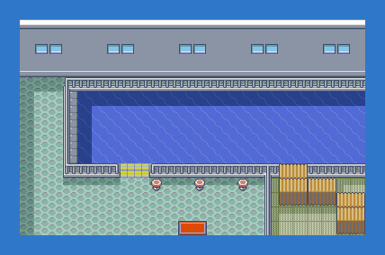

PokémonEMMA'S EMERALD
OFFICIAL Strategy Guide
Slateport City Harbor
TIP
UNC G waits on the dock. Her final fight and her Lapras. No wild Pokémon in the grass here. Time of day: M = morning (6–10), D = day (10–19), E = evening (19–20), N = night (20–6).
Event: UNC G

After the Sootopolis crisis UNC G waits on the dock for a boat. Beat her real team and she gives you her Lapras.
UNC G: Gyarados LV45; Milotic LV46; Oricorio-Baile LV46; Muk-Alola LV47; Jynx LV48
Team shown for Normal. Hard adds items and full sets; Easy is three levels lower.
80